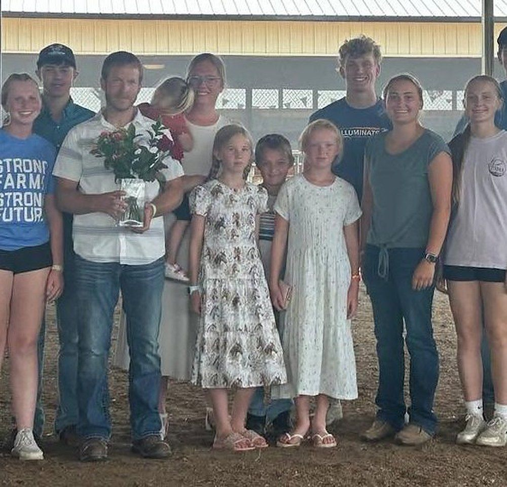
Tyler & Marla Litwiller, owners
As the owners of this small-town feed mill, our goal is simple: provide quality feeds at affordable prices for all your animals.
We carry Purina, Vita Plus, IDO and FAMO feeds, and we make custom feed for horses, sheep, calves, beef and goats with help from our nutritional staff. We also offer Legend Seeds and Alforex low-lignin alfalfa seed for your planting needs.
There's plenty of competition out there. What we offer is friendly service and doing what our customers need, whether that's a custom mineral mix for your herd or ordering something special that isn't on the floor.
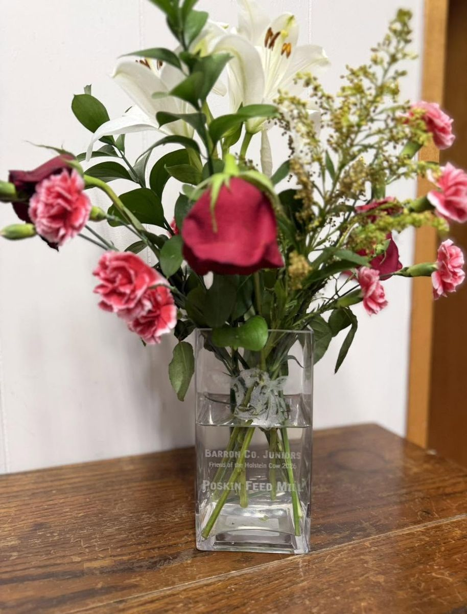
2026 Friend of the Holstein Cow
The Barron County Junior Holstein kids nominated Poskin Feed Store for this year's Friend of the Holstein Cow award. Each year they choose a business that has supported them throughout their dairy projects and their efforts to bring a select group to the Wisconsin State Fair.
Owners Tyler & Marla Litwiller and their children accepted the award on behalf of Poskin Feed Store. We're grateful to our community for continuously supporting PFS. Thank you!
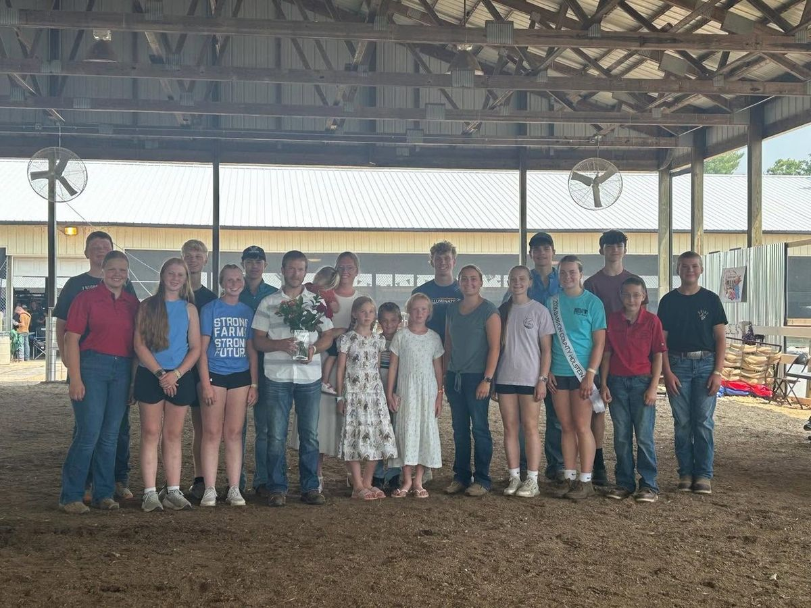
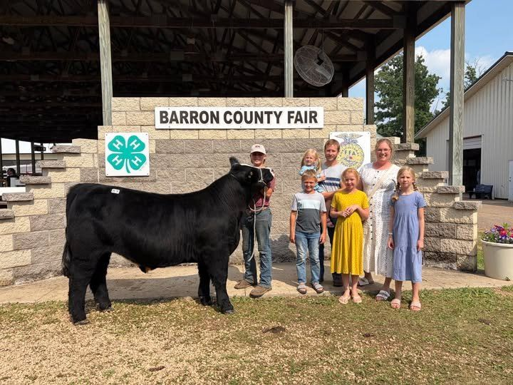
Supporting local 4-H
We are proud and honored to purchase the livestock that these kids put so much work into at the Barron County Fair. We love supporting the local 4-H kids!
Mason & Caramel Corn
This year we bought Mason's hog, Caramel Corn, at the Barron County Jr. Livestock Sale. Here's what his family shared afterward.
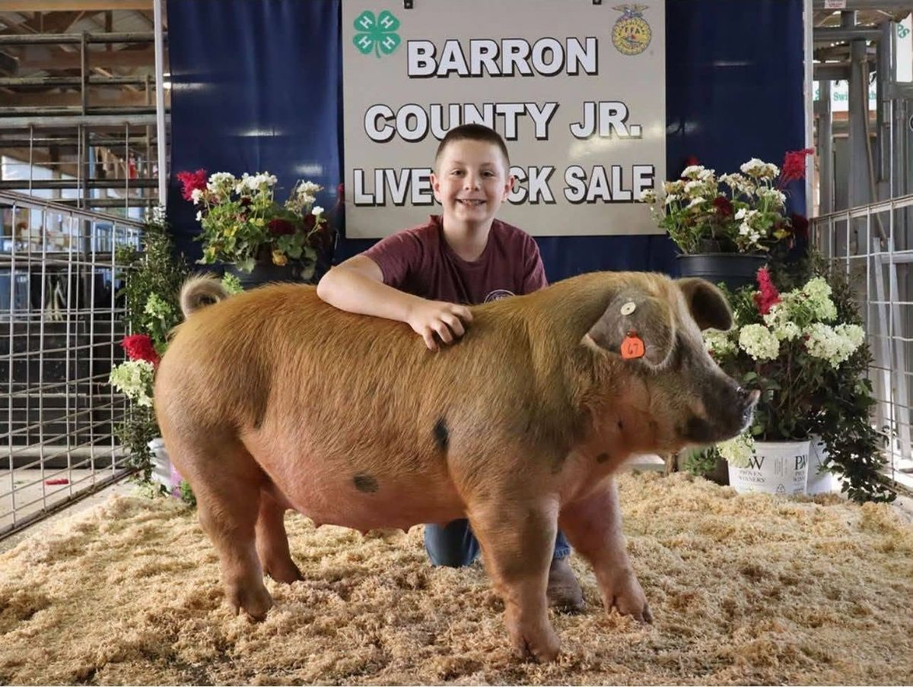
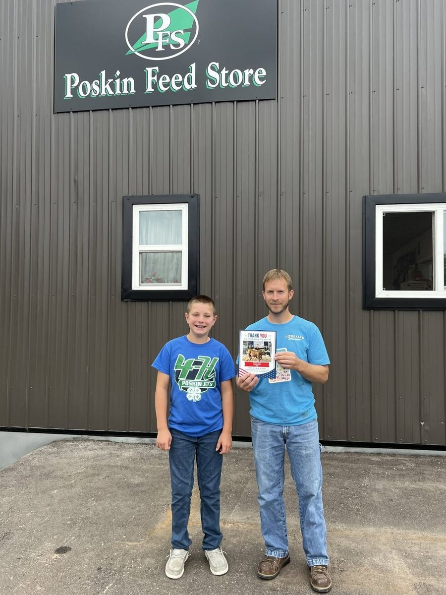
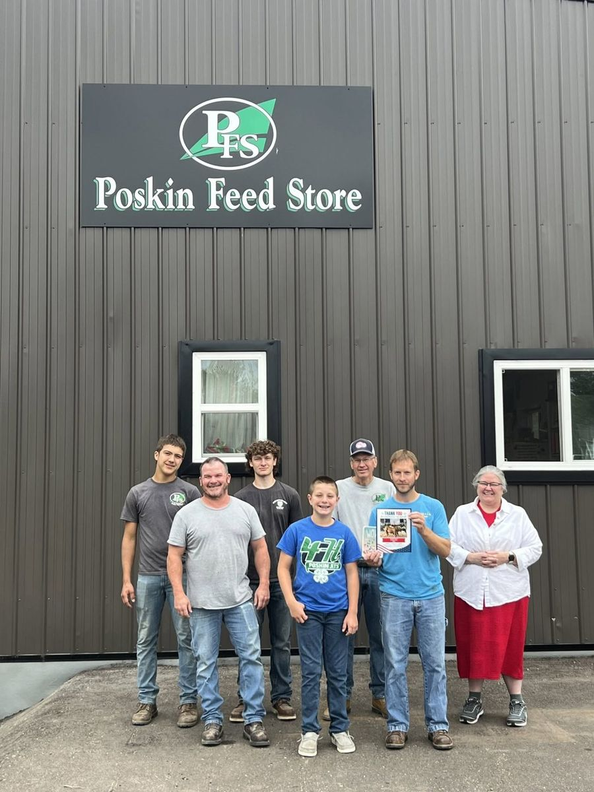
"We are especially thankful for the Poskin Feed Store and Litwiller Family for their generosity in purchasing Mason's hog this year during the auction. The support the feed store supplies our community is endless and we are so thankful."
Mason's family
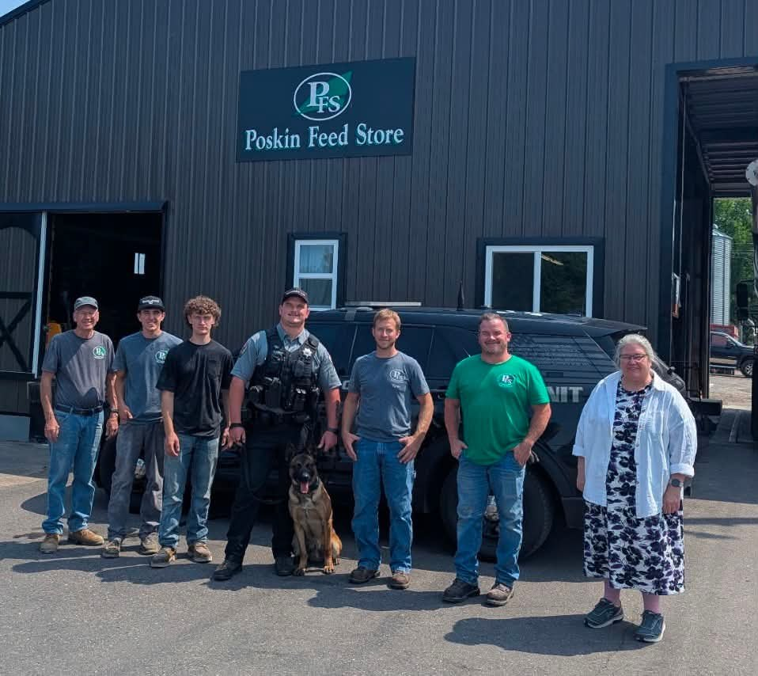
Supporting our local K9 unit
Every month, Poskin Feed Store donates dog food to the local K9 program, helping keep its four-legged officers well-fed and ready to work.
"A special thank you to Poskin Feed Store for their generous monthly donation of dog food to our K9 Program. Your ongoing generosity helps ensure our K9 partners are well-fed and ready to do the important work they do every day."
Local K9 Program
The store
Hours & directions →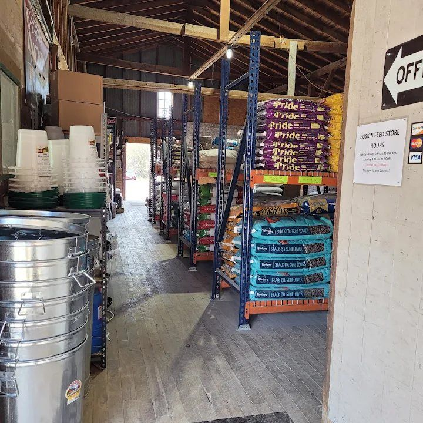
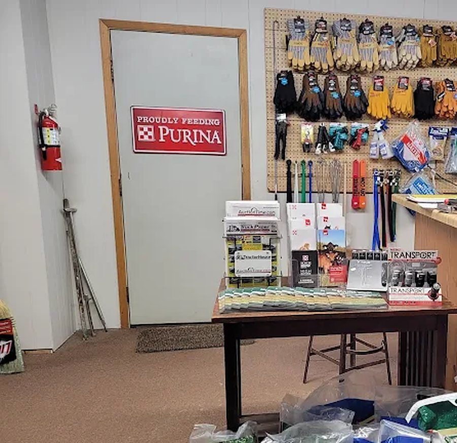
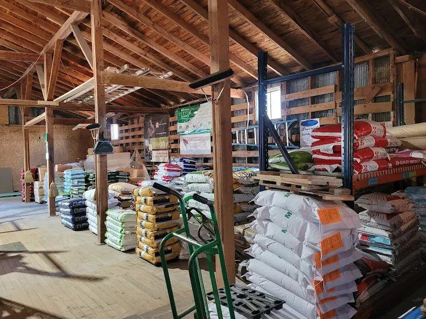

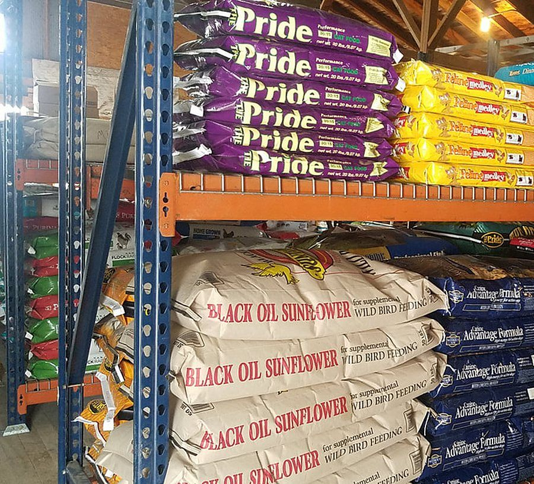
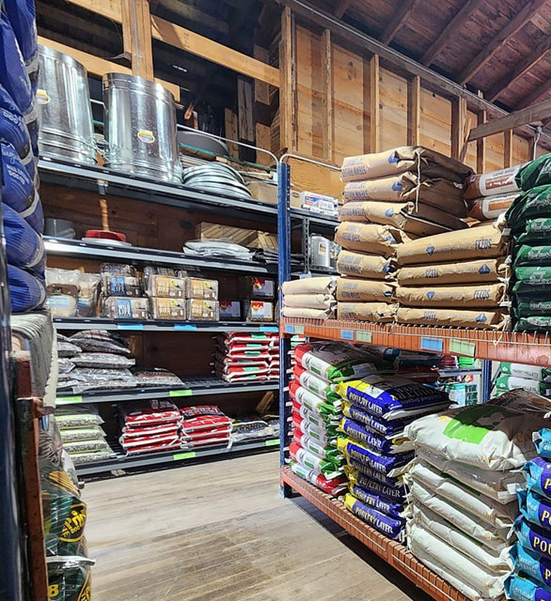